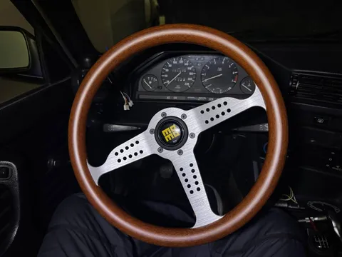
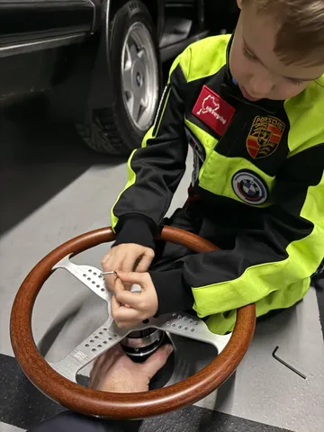

Всем привет. Я вернулся в канал, а вместе со мной - понедельничная рубрика #лёха_строит_бэху.
Времени много не было из-за поездки и прочих дел, но мы сделали одну важную вещь - руль.
У каждого человека, искренне любящего тачки, есть какие-то фетиши - детали, на которые он обращает внимание, которые "делают вид" в его глазах, которые он считает важными. Например, колесные диски. Трудно поверить, но подавляющее большинство обывателей не обращают ровным счетом никакого внимания на диски. Ну колеса и колеса, вроде круглые, что там смотреть. Кто-то считает, что диски делают 80% вида машины в профиль. Кто-то исповедует формулу "колеса+посадка" (и речь даже не о стэнсе, где колеса правда крайне важны).
Я тоже считаю диски очень важным элементом лука, но к ним мы еще вернемся. Я же от себя добавлю такой фетиш, как руль. Рули бывают разные - стоковые, спортивные, олдовые, пухлые, тонкие, трехспицевые, четырехспицевые и так далее. И, на самом деле, вне зависимости от этих категорий, они бывают классные и не-классные. Это чистая вкусовщина, но для меня, почему-то, правда важно, как выглядит руль. Тем более, что он всегда перед тобой. Бывают классные стоковые рули, а бывают и не-классные.
Так вот у е30, как миниум в моем экземпляре, был не-классный. Сразу возникло желание его поменять. И раз уж менять, то на что-то классное. Попался мне на глаза momo super grand prix - олдовый спортивный руль с деревянным ободом и перворированными спицами. Просто нравится. Значит - ставим.
А раз уж мы туда полезли, заодно можно реализовать давнюю фантазию - быстросъем со звуком "дзынь". Смысла в этом искать не надо - в реальности быстросъем нужен в каркашенных тачках, где руль объективно мешает залезать и вылезать, и удобно его быстро отстегнуть и повесить на крючок. В нашем случае - просто баловство. Но не для этого ли весь этот проект?
На бумаге заменить руль - не сложно. Отковыриваем эмблему, откручиваем гайку на 21, сдергиваем руль. Далее берем адаптер для вашей модели авто, насаживаем на шлицевое (не забыв поставить бегунок сигнала и стопор блокиратора колонки), прикручиваем к нему базу быстросъема (не забыв подключить проводки звукового сигнала). Желательно перед этим всем снять клемму с аккумулятора, особенно если есть подушка безопасности в руле, иначе может бахнуть! Далее прикручиваем сам руль к ответной части быстросъема и вставляем серединку с кнопкой сигнала.
В реальности, конечно же, все оказалось куда сложнее и заняло больше часа. Но это уже можно прочувствовать только на практике, тут универсальных советов нет. И то мы не до конца преуспели - звуковой сигнал у нас не заработал, но с этим мы разберемся позже. Но - тем не менее - победа! Теперь у нас офигенный руль, еще и на быстросъеме со звуком "дзынь")
П.С. Лайфхак: когда снимаете руль, гайку надо откручивать не до конца, а оставить ее на паре витков, чтобы когда вы таки сдернете руль со шлицов, он не отлетел по инерции вам в лоб - дергать там надо прям сильно.
